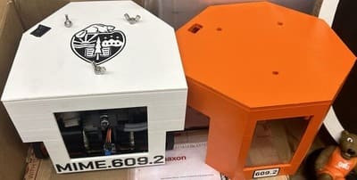

During my senior year at Oregon State University, I worked on my capstone project which was to create a Sumobot. The 4-person team was tasked with creating
a robot that could fight in a mega sumobot competion. I filed the role of mechnical lead and coding lead. The design we created focused on using interesting shapes
and to be easily modified. The design had a metal frame with a 3D printed top and mutliple 3D printed armors. An arduino was used to control the motors and get data from
the sensors used. The speed and direction of the motors were based off of readings from the sensors.

Skills Used
Arduino
Solidworks
Techincal Drawings
3D printing
Time Management
Teamwork
Undergraduate Thesis
Working with Aprovecho, I created a Jupyter Notebook Interface for Wood Stove Emissions Analysis to effectively create safer traditional wood stove designs mostly found in third world countries.
This notebook used code from Aprovecho and added visuals and other functionalty to create a useful user interface. This makes for easier data analysis, which allows for design changes to be more efficient.
Using a UR5e arm, I created a system that will measure the diameter of the branch it is placed in front of. The majors steps of this system are
one getting parallel to the branch, two performing optical flow, and three making contact with the branch. This system was coded in python and uses the
Robotic Operating System (ROS2). The end effecor was designed in SolidWorks and 3D printed. It uses 2 low-cost time-of-flight (TOF) sensors, a load cell, an RGB camera, and an arduino.